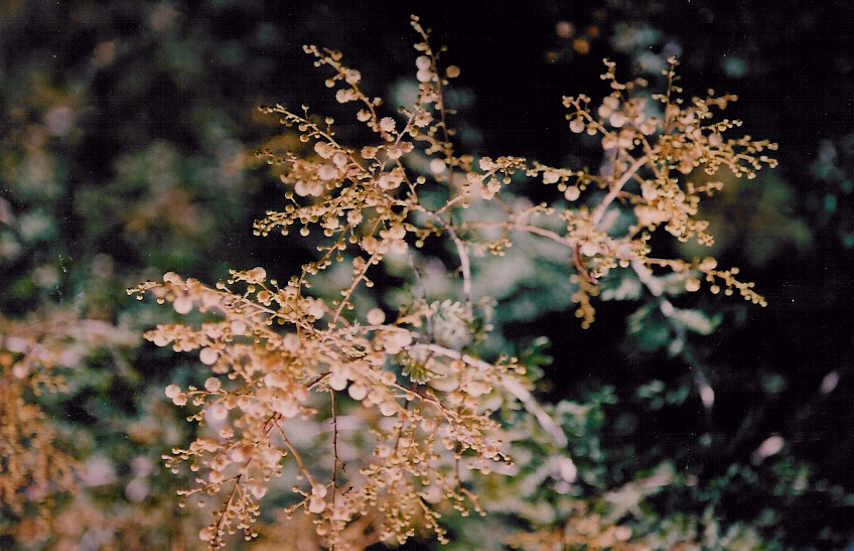

Acacia leucophloea Wild.
----- Taxonomic Details

----- Correct Name
----- Classification
----- Synonyms
----- Common Names
Other Biological Details
----- Habit and Habitat
----- Diagnostic Features
----- Reproductive Biology
---------- Breeding System
---------- Phenology
---------- Pollinators
---------- Seed Biology
----------Seed Germination
------ Cultivation
----- Major Pests and Diseases
Economic Potential and Uses
----- Parts Used
------Uses
----- Harvesting Practices
----- Produce and Products
----- Chemistry
----- Processing Techniques
----- Other uses
----- Economic Potential to the
Country
----- Export Potential
Miscellaneous Information
Literature
Taxonomic
Details
Correct Name
: Acacia leucophloea Willd.
Family : Mimosoidae
Synonyms : Mimosa leucocephala;
Common Names :
English: Vipralambi, Vipralobhi, White babool. l
Sanskrit: Shvetabarbura.
Hindi: Safed
kikar, Arimeda, Arimedah, Arinj, Belad, Distiller's acacia,
eru, Gandhirwa, Hiwar, Jhind, Jhira, Karir, Nimbar, safed babulk, Ranj, Raunj,
Ringa, Rinj, Rohani, Ronj, Rounjha, Safed babul, Safed Khejri,Sarab ki kikar,
Urajio
Bengali: Safed
babul,
Malayalam: Pattacharaya-
maram, Pattacharayamaram, Vellavelakam, Vellavelam
Marathi; Bela, Deobabhula, Hewar, Nimbar, Oandaribabul, Panharya
Tamil: Velvayalam,
Pattaiccarayamaram, Pattaicharayam, Vel, Vellavelan, Velvayalam,
Velvel, Velvelam
Telugu: Tella
tuma, Tela tumma, Tella thuma, Tellatumma
Kannada: Bile jali, Bili jali
Misc:
Back to Top
Other
Biological Details
HABIT & HABITAT
A bushy plant, 4-8' high, a
moderate-sized tree, ordinarily up
to 3' in
girth with an 8-10' bole occurring
throughout the Deccan peninsula, Ceylon and Tropical Burma. An infusion of the
leaves is regarded as a stomachic and alterative.
It is smaller in very dry localities, and the stem is crooked and gnarled.
The tree is very characteristic of dry regions. It is found in the plains of the
Punjab and through out the dry forest tracts of the peninsula. It occurs also
in the dry zones of Burma.
The wood seasons well. It is not very durable, as the sapwood is liable to attack
by borers.
It is difficult to saw, especially when dry.
It does not machine as well as babul, but with care planes to a good surface
and takes a good polish.
BioticZone: Deccan Plateau.
Soil: Sandy loam soil is well suited for it's growth.
Availability :
Misc: Alandi, Amreshwar, Antapur Reserve Forest, Aruna river bank, Atru, Aunwa
hills, Balod, Barora, Bhalki-Aurad Road, Bichpuri campus, Burma to Malaya, Chalkere-Chitradurg
Road, Chamundi hills, Chicksandra State Forest, Chiribi Reserve Forest, Chitradurga-Tumkur
Road, Chowdlapura State Forest, Circars, Deccan, Dhabdi forest, Dhamtari, Eastern
nallamalais, Gunthgola, Janekal State Forest, Jogimatti (State Forest), Kachha
Bundha R.F,Kachhabundh, Kharbi range, Khuria, Kumarilikere State Forest, Kuri,
Mahaballeshwar, Mamdapur, Marigudihalla, Medshi, MountAbu, Nallamalais, Patur,
Peddachama, Ponnala, Raipur, Rajnandgaon, Ramgad forest, Rangapurama, Shivpura
Reseerve Forest, Siras forest, South to Ceylon, Srinivaspur-Chintamani Road, Srinivaspur-Pungnur
Road, Taregaon, Thumankeri Reserve Forest, Tiptur-Gubbi Road, Tondala,Tulasgeri
Reserve Forest and Yerramalais.
Country: Burma,India,Malay Peninsula,Malayasia,none,S.E.Asia and Sri Lanka,
Zone: Central, North, North west, South, South west and West zones,
State: Andhra Pradesh, Karnataka, Kerala, Madhya Pradesh, Maharashtra, Punjab,
Rajasthan, Tamil Nadu and Uttar Pradesh,
District: Agra, Akola, Balaghat, Bangalore, Banswara, Bastar, Bellary, Bhind, Bhopal,
Bidar, Bijapur, Bilaspur, Chandrapur, Chitradurga, Dhar, Dharmapuri, Durg,
Gulbarga, Gwalior, Hassan, Hoshangabad, Indore, Jodhpur, Kolar, Kota, Kurnool,
Mandla, Medak, Morena, Mysore, Nasik, Nimar East, Palani, Panna, Raichur,
Raigarh, Raipur, Raisen, Rajnandgaon, Rajputana, Ratlam, Sagar, Satara, Satna,
Seoni, Shivpuri, Sholapur, Sidhi, Sirohi, South Arcot, Tikamgarh, Tiruchi, Tonk, Tumkur and
Yawatmal.
Taluk: Abu road, Kunigal and Pachmarhi
Status :
Back to Top
DIAGNOSTIC FEATURES
It
has strong, straight, white spines, nearly an inch in length.
The bark is light-yellowish grey to nearly white and light red inside.
It is smooth and ex- foliates in irregular scales. The
wood is moderately heavy, coarse-textured,
and the grain is interlocked irregularly (sp. gr.,1K 0-71 ; air-dry wt.,
46 Ib. per
c. ft.). The sapwood is
yellowish-white
and heartwood
is brick-red, Ageing to reddish brown with darker streaks. Anatomically
it is featured by large vessels which are frequently occluded with gum, broad
bands of Parenchyma alternating with narrow bands of Dense fibrous tissue and
rather narrow rays.
Back to Top
REPRODUCTIVE BIOLOGY
Breeding System
:
Phenology :
Flowering occurs during August- October
and also there is a report of flowering during September - April.
Pollinators:
Seed Biology :
Seed Germination :
Cultivation:
Back to Top
MAJOR PESTS & DISEASES
Pests:
Diseases:
Back to Top
Economic
Potential and Uses
Parts used
Timber,
Bark, Pods and Seeds.
Uses:
Harvesting Practices
Produce and Products :
Agricultural
implements and Gum.
Back to Top
Chemistry
Back to Top
Processing Techniques
Back to Top
Other Uses
- The bark is used for tanning. The tannin content to vary with the locality from which
the bark is obtained, e.g. Dehra Dun bark, 9% ; Mysore bark, 21%. However, it
is commercially inferior to A. arabica bark. It is also employed as a tan in
Java. The bark yields a fibre when it is steeped in water and
beaten. This is used for fishing nets and coarse cordage. It is said to be used
in the preparation of spirits from sugar and palm juice. It appears to act as
a clarifying and flavouring agent. Hence the tree is also known as sharab ki
kikar, or distiller's acacia.
- The gum is used in indigenous medicine. The young
pods and seeds are eaten, and in times of scarcity even the bark is ground and
mixed with flour. The pods are generally gathered for fodder.
- The timber is strong, hard and tough.
It is commonly used for agricultural implements, oil mills, carts and cart wheels,
and for turnery. It is everywhere used as fuel.
- Used for making agricultural implements, used in
Bihar and Orissa for ploughs, oil mills and in Madras for roofing purposes.
In Burma used for beams, posts, and turnery purposes and in UP for tool
handles. Extensively
employed for fuel purposes.
Back to Top
Economical
Potential to the country
Back to Top
Export Potential
Back to Top
Miscellaneous
Information
Back to Top
Literature
- Flora of Bilaspur District, Madhya
Pradesh.G.Panigrahi & S.K.Murti,1989,Library,ATREEBangalore.
- Sandhya Deshpande, Sharma B. D. and Nayar M.P.Flora of Mahaballeshwar and Adjoinings,Maharashtra
- Sasya Sahyadri- A CD on Plants of Western Ghats,
2003, K.N. Ganeshaiah.
- The wealth of India, A Dictionary of Indian Raw
Materials and Industrial Products, Vol. II. C, Publications and Information
Directorate, CSIR, New Delhi, India, 1950.
Back to Top